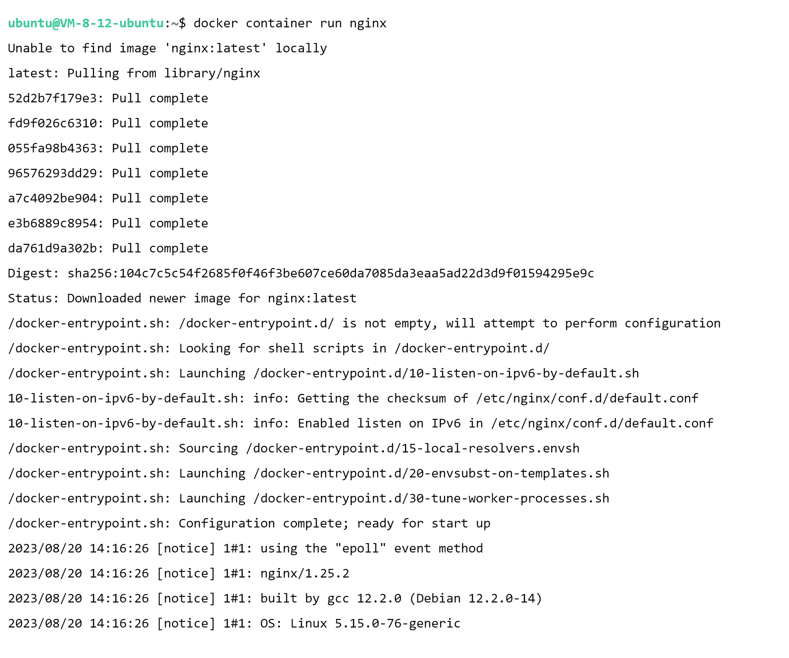
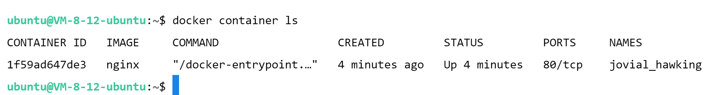
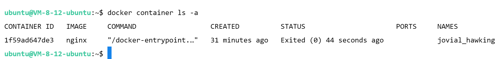
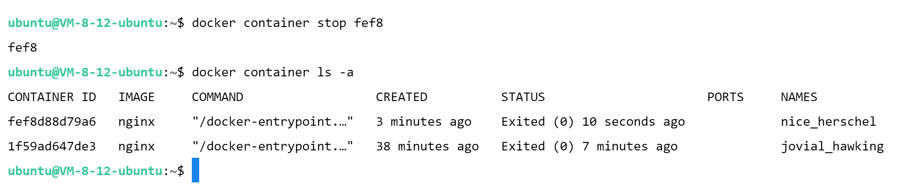
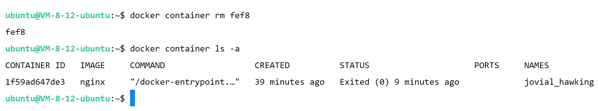
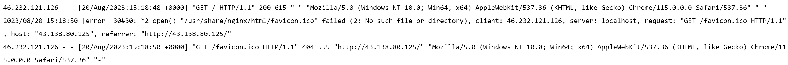
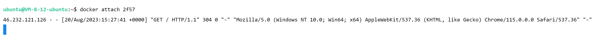
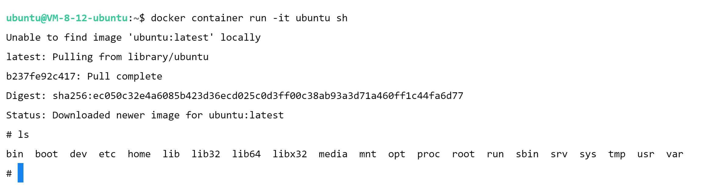
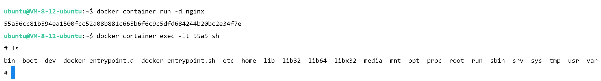

Docker的介绍与安装
容器
容器技术是一种虚拟化技术，用于在操作系统级别隔离应用程序及其依赖，以实现更高效、可移植和可扩展的软件部署。传统上，虚拟化技术通过在物理服务器上模拟多个虚拟机来实现隔离，每个虚拟机都运行完整的操作系统和应用程序。然而，这种方式通常会导致资源消耗较高，启动时间较长。
容器技术的目标是克服传统虚拟化的一些限制，提供更轻量级、更快速的应用程序隔离和部署方案。容器不需要模拟完整的操作系统，而是共享宿主操作系统的内核，并将应用程序及其运行时环境、依赖等打包到一个封闭的运行环境中—这个封闭的环境被称为容器。容器之间相互隔离，但与宿主操作系统共享资源，因此可以更高效地运行多个容器实例。
一些常见的容器技术包括 和 。容器技术的主要优势包括：
- 轻量级：容器相对于虚拟机来说更加轻量，因为它们共享操作系统内核，无需模拟整个操作系统。
- 快速启动：由于容器不需要启动完整的操作系统，它们的启动时间比虚拟机更短，可以更快地部署和扩展应用。
- 可移植性：容器将应用程序及其所有依赖打包到一个封闭环境中，使得应用程序在不同环境中的部署更加一致，减少了因环境差异而导致的问题。
- 资源利用率：由于容器共享宿主操作系统的内核，它们的资源利用率较高，可以在相同的硬件上运行更多的应用实例。
- 可扩展性：容器可以根据需求快速地进行扩展，适应不同的负载情况。
容器技术已经在现代软件开发和部署中变得非常流行，特别是在微服务架构和持续集成/持续交付（CI/CD）流程中，容器技术带来了更高效、可靠和灵活的解决方案。
容器标准化
容器的标准化是指制定通用规范和标准，以确保不同容器技术在各种环境中能够互操作，使容器具有更高的可移植性、互换性和一致性。容器标准化有助于减少供应商锁定，简化应用程序的部署和管理，并促进整个容器生态系统的发展。
以下是几个与容器标准化相关的主要标准和倡议：
- OCI（Open Container Initiative）：OCI是一个Linux基金会托管的项目，旨在定义容器运行时和镜像格式的开放标准。OCI制定了运行时规范（runtime specification）和镜像规范（image specification），其中运行时规范定义了容器运行时的行为和API，而镜像规范定义了容器镜像的格式和结构。Docker和Containerd等容器工具都遵循OCI标准。
- CNCF（Cloud Native Computing Foundation）：CNCF是一个致力于推动云原生计算发展的组织，它管理多个与容器相关的开源项目，包括Kubernetes、Prometheus、Envoy等。这些项目在容器编排、监控、服务发现等领域提供了标准化的解决方案，有助于构建云原生应用。
- CNI（Container Networking Interface）：CNI是一个用于定义容器网络接口的规范，它允许容器运行时使用不同的网络插件来实现网络功能，如网络配置、IP分配、路由等。CNI有助于确保不同容器运行时在网络方面的兼容性。
- Kubernetes： Kubernetes是一个用于容器编排和管理的开源平台，它提供了一套标准化的API和机制，用于自动化部署、扩展、管理容器化应用程序。Kubernetes有助于推动容器应用的标准化和规范化。
- SPIFFE（Secure Production Identity Framework For Everyone）：SPIFFE是一个安全身份验证和授权框架，旨在为容器和微服务提供标准化的身份认证和授权方案，以解决多个服务之间的身份验证和信任问题。
这些标准和倡议共同推动了容器技术的标准化和互操作性，使得不同容器技术可以更加无缝地集成和协同工作，从而提高了容器生态系统的稳定性和可靠性。
在 Linux 系统上安装 Docker
下载脚本
1 | curl -fsSL get.docker.com -o get-docker.sh |
执行脚本
1 | sh get-docker.sh |
验证安装（版本）
1 | docker version |
Image vs Container
Docker Image（镜像）：Docker 镜像是一个只读的、轻量级的、可执行的软件包，其中包含了运行特定应用程序所需的所有内容，包括代码、运行时、系统工具、库文件和依赖项。镜像是应用程序在特定时间点的静态快照，可以看作是一个模板，从中可以创建多个容器实例。镜像是通过 Dockerfile 文件定义的，其中包含了构建镜像所需的指令，如安装软件、配置环境变量等。
Docker Container（容器）：Docker 容器是从 Docker 镜像创建的可运行实例。容器是一个独立的、隔离的运行环境，其中包含了镜像中的应用程序和其所需的所有资源。容器提供了一种轻量级、一致性强、可移植的方式来打包、分发和运行应用程序。容器化应用程序之间是相互隔离的，因此它们可以在同一台主机上同时运行，而不会互相干扰。
Image VS Container
- 镜像是容器的基础。在创建容器之前，需要首先构建一个镜像，该镜像包含了应用程序的所有依赖项和配置。
- 容器是镜像的运行实例。通过使用特定的镜像，可以创建一个或多个容器，每个容器都是独立的、隔离的运行环境，可以在其中运行应用程序。
容器基本操作
-
容器创建：
-
docker container run <image name>：docker run <image name> -

-
-
容器的列出：正在运行
-
docker container ls：docker ps -

-
-
容器的列出：正在运行 && 已经停止
-
docker container ls -a：docker ps -a -

-
二者区别（列出的容器运行状态划分）：

-
容器的停止：
-
docker container stop <name or ID>：docker stop <container name or ID> -

-
-
容器的删除：未停止不能删除（可以添加参数
-f）-
docker container rm <name or ID> (-f)：docker rm <container name or ID> -

-
批量操作
- 容器的批量停止：
- 法一：
docker container stop <name or ID>... - 法二：
docker container stop $(docker container ps -aq)
- 法一：
- 容器的批量删除：
- 法一：
docker container rm <name or ID>... - 法二：
docker container rm $(docker container ps -aq)
- 法一：
容器的各种模式
attach 模式和 detach 模式是 Docker 容器的两种不同运行模式，分别控制容器是否与终端交互以及容器运行后的状态。
Attach 模式：在 attach 模式下，容器会连接到当前终端，允许用户与容器交互。这意味着容器的标准输入（stdin）、标准输出（stdout）和标准错误（stderr）将直接连接到终端。可以在容器内执行命令，并在终端上查看输出。但是，如果关闭了终端，容器也会停止运行。
Detach 模式：在 detach 模式下，容器以后台守护进程方式运行，不会连接到当前终端。容器会继续在后台运行，即使关闭了终端窗口，也不会影响容器的运行。这种模式适用于长时间运行的应用程序，如 Web 服务器。
attach 模式
1 | docker container run -p 80:80 nginx |

CTRL + C 可以退出
detach 模式
1 | docker container run -d -p 80:80 nginx |
刷新命令行无结果显示，需要切换到 attach 模式退出：


连接到 Docker 容器的 shell
-
创建一个容器并进入交互式模式：
docker container run -it-

-
-
在一个已经运行的容器进入交互式模式：
docker container exec -it-

-
总结
1 | docker container run [OPTIONS] IMAGE [COMMAND] [ARG...] |
OPTIONS：一系列可选的标志和参数，用于配置容器的各种属性，例如端口映射、网络设置等。IMAGE：指定要使用的 Docker 镜像名称，以创建容器实例。COMMAND：可选参数，指定要在容器内部运行的命令。如果省略，容器将使用镜像的默认命令。ARG...：可选参数，用于传递给容器内部命令的参数。
当 docker container run 命令时，实际上会触发一系列的操作，涉及到 Docker 的镜像、容器、网络和文件系统等方面。
以下是运行 docker container run 命令背后发生的主要步骤：
- 检查镜像：Docker 检查本地是否存在指定的镜像。如果本地不存在该镜像，Docker 将从 Docker Hub 或其他镜像仓库下载该镜像。
- 创建容器：一旦镜像可用，Docker 将使用镜像创建一个新的容器实例。这个容器将拥有自己的文件系统、进程空间、网络命名空间等。
- 分配容器 ID：Docker 会为新创建的容器分配一个唯一的容器 ID。
- 应用配置：Docker 会根据命令行参数、环境变量等配置信息，对容器进行相应的配置。
- 文件系统联合挂载：Docker 使用联合文件系统技术将镜像的文件系统与容器的文件系统进行联合挂载。这使得容器可以读取和写入文件，同时隔离了容器之间的文件系统。
- 网络连接：根据容器的网络配置，Docker 将为容器分配一个虚拟网络接口，并可能配置网络连接，如端口映射、连接到网络等。
- 启动容器：一旦所有配置都准备就绪，Docker 将启动容器。容器内的初始进程将开始运行。
- 标准输入输出连接：如果在命令中使用了
-it参数，Docker 将连接容器的标准输入和标准输出，允许用户与容器进行交互。 - 执行命令：如果在命令中指定了要在容器内运行的命令，Docker 将在容器内部执行该命令。一旦命令执行完毕，容器可能会自动停止，或者根据指定的模式继续运行。
- 容器监控：Docker 守护进程会监控容器的运行状态。如果容器退出或失败，Docker 可能会根据容器的退出状态和策略采取一定的操作，如重启容器、清理容器等。